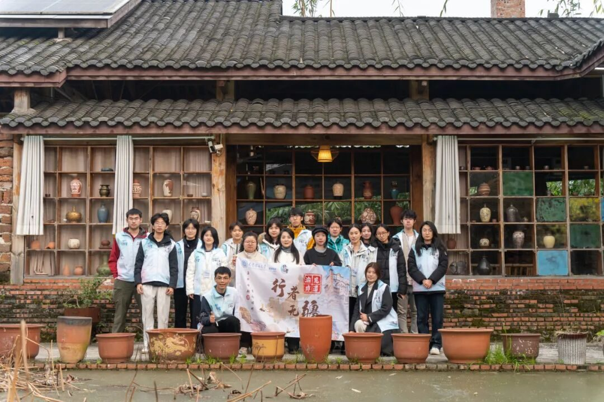
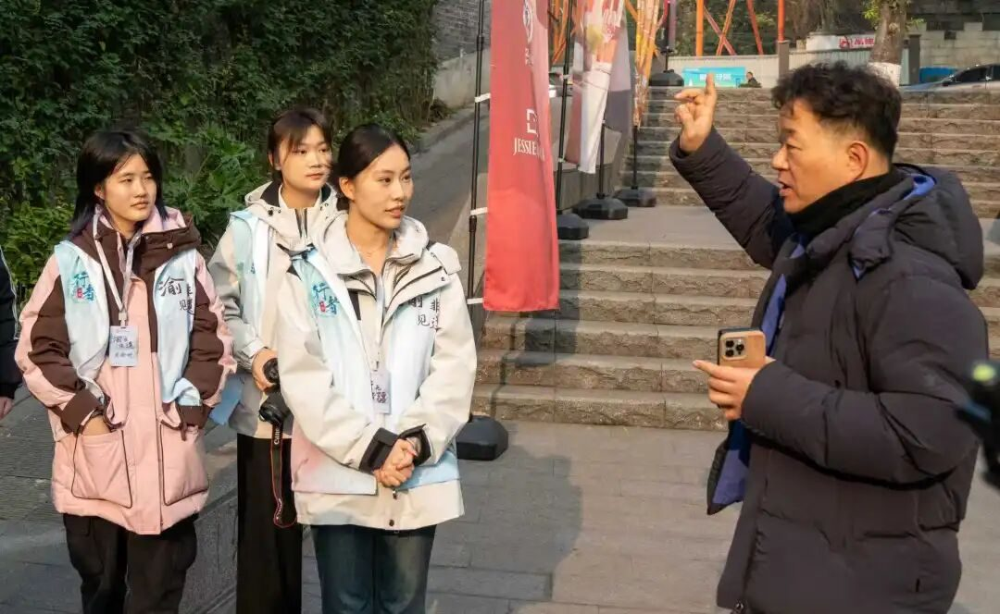
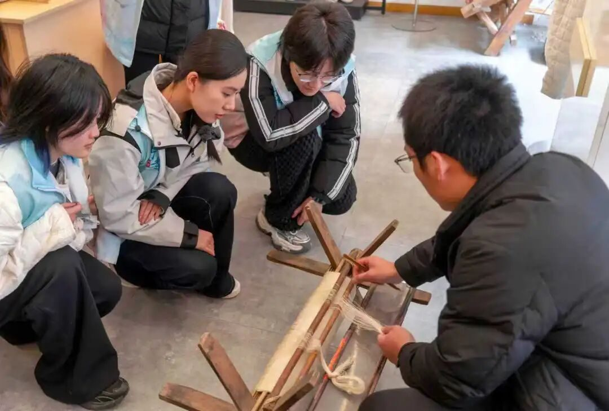
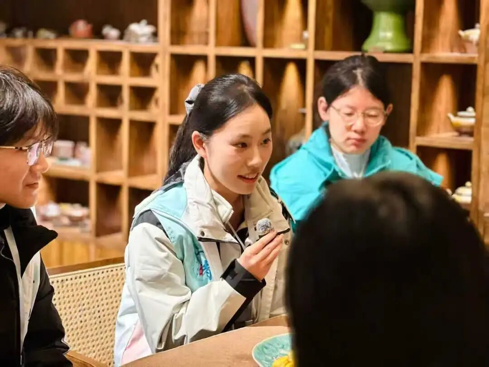

【行者无疆·渝见非遗】个人实践感悟—齐子涵

当重庆的热浪裹挟着嘉陵江的水汽扑面而来，我第二次以行者无疆实践团成员的身份，踏上了这片承载着千年文脉的土地。为期数日的“渝见非遗”之旅，我们穿行于博物馆的展陈之间，驻足于手工作坊的烟火之中，与非遗传承人促膝长谈，在触摸传统技艺温度的同时，也读懂了一座城市的人文底色与时代坚守。这段旅程，不仅是对非遗技艺的探寻，更是一场关于文化传承、匠心坚守与时代创新的深度对话。

初抵重庆，这座城市的热情便如火锅般滚烫浓烈，浸润着每一个角落。作为负责外联与采访工作的成员，我在前期联络阶段便已深切感受到这份独有的温暖。多位非遗传承人老师即便事务繁忙，也会耐心解答我的每一个疑问，细致商议走访的各项细节。即便因客观原因未能成行，那些“重庆欢迎你们”“一路平安”的真挚祝福，依然跨越屏幕传递过来，成为我工作中最温暖的动力。走进博物馆，场馆负责人的讲解更是将这份真诚发挥到极致。他们没有机械地背诵展品说明，而是以深入浅出的语言，结合自身对非遗的理解与情感，引导我们透过一件件器物、一幅幅图景，触摸非遗技艺的内核。展品被精心呵护，每一道纹路、每一抹色彩都承载着岁月的沉淀，而讲解者的真诚，如同为我们推开了一扇扇通往传统的大门，让原本略显遥远的非遗文化变得可感可知。这份发自内心的热忱，不仅筑牢了实践顺利开展的基础，更让我明白，重庆的热情从来不是浮于表面的客套，而是融入血脉的人文基因，是支撑非遗文化代代相传的精神养分。
然而，重庆的人文底蕴远不止于这份炽热的热情，更深藏着兼容并蓄的厚重与沉稳。
在重庆母城非物质文化遗产馆，萧老师的分享让我对非遗的生存与发展有了更为深刻的思考。从场馆的建设历程到重庆非遗的名录现状，萧老师娓娓道来，其中关于非遗传承的创新思路令人尤为触动。他提出利用AI技术制作演示视频，让精湛的技艺得以精准记录并广泛传播；主张通过合理减少制作步骤压缩成本，帮助传承人实现更好盈利。这番话背后，是对非遗发展困境的清醒认知——当下许多非遗产品的价值与价格严重失衡，坚守匠心与维持生计成为传承人们面临的两难命题。非遗的生命力离不开经济的滋养，但更不能在商业化的浪潮中丢失技艺的本真。萧老师的思路，恰是在传统与现代之间寻找平衡点：先以更具性价比的产品打开市场、扩大知名度，再逐步推广完整技艺，让非遗在生存无忧的基础上实现高质量传承。这种既务实又不失坚守的智慧，让我看到了非遗传承的另一种可能。
在重庆非遗体验馆，李主任细致讲述的重庆发展史，让我读懂了这座城市的精神内核。“湖广填川”的历史迁徙，造就了重庆文化的多样性与包容性，来自五湖四海的人们在此扎根、交融，形成了独特的地域文化。这份包容，让重庆的非遗文化既有本土的鲜明特色，又吸纳了不同地域的文化养分，得以不断丰富发展。而在中国三峡博物馆，瞿塘峡的险峻与秀美背后，是长江文明的源远流长。几公里的峡谷之间，孕育了多种文明形态，那些出土的文物、留存的遗迹，无不印证着重庆作为长江上游文化中心的厚重底蕴。从巴人文化的神秘诡谲到近现代的热血豪情，重庆的历史如一幅波澜壮阔的画卷，铺展开来，而非遗文化便是这幅画卷中最鲜活的笔触，记录着人们的生活智慧与精神追求。

如果说重庆主城区的非遗带着都市的活力与厚重，那么荣昌的非遗则多了一份市井的烟火气与从容不迫的稳重。与主城区的热闹繁华不同，荣昌的街道更为平坦，行人的步伐也更为从容。这份从容，让荣昌在网络爆红之后，依然能保持清醒的认知，迅速做出反应却从未出现差错。我想，正是这份“稳重”，让荣昌的三项国家级非遗得以长远发展。
在荣昌折扇厂，尹老师的讲述让我动容。作为祖祖辈辈从事折扇生产的传承人，尹老师孩提时便在折扇厂的烟火气中长大，亲眼见证了荣昌折扇从鼎盛到衰落的全过程。曾几何时，荣昌折扇作为中国三大名扇之一，风靡一时，家家户户都以制作折扇为生。但随着社会快速发展，机器大规模生产取代了传统手工业，荣昌折扇遭遇了前所未有的发展瓶颈，曾经红火的支柱产业迅速没落。即便如此，尹老师与一众老艺人依然凭借着对这份手艺的热爱与情怀，艰难地坚守着。“我只是想把荣昌折扇传承下去，国家政府的政策都在帮助我们荣昌折扇发展得越来越好”，尹老师的话语质朴无华，却道出了老艺人最纯粹的坚守。这份坚守，无关名利，只为让祖宗传下来的手艺得以延续，让荣昌折扇的香气不至于消散在时光长河中。 在安陶小镇，我同样感受到了这份坚守的力量。

荣昌陶作为中国四大名陶之一，也曾经历过时代发展的冲击。机器生产的便捷与廉价，让传统手工制陶面临巨大挑战，但总有一些匠人不愿放弃。他们带着要把荣昌陶发展下去的决心成立了荣昌陶器博物馆，用一件件陶器记录荣昌陶的内核；他们坚守着选土、制坯、上釉、烧制的每一道工序，以手工的温度赋予陶器独特的生命力。每一件作品，都凝聚着匠人的心血与智慧，纹路里藏着岁月的痕迹，色泽中透着自然的韵味。这种手工制作的独特性，是荣昌陶能够在经历时代浪潮淘洗的关键，机器化生产则是荣昌陶在当今时代站稳脚跟的。
而荣昌夏布的发展，则让我看到了非遗传承的艰难与希望。夏布向来低调，多作为刺绣的载体或折扇的扇面，始终处于“陪衬”的位置，难以被人单独关注。如今，掌握传统织布技艺的人已不足百人，年轻人更是寥寥无几，这项古老的技艺面临着失传的危机。就在这样的困境中，陈克厂老师毅然回到家乡，创办“一宁夏布”，只为寻找荣昌夏布新的出路。他不断尝试将夏布与现代设计相结合，开发出服饰、饰品、家居用品等多种产品，让夏布从幕后走向台前，以全新的姿态出现在大众视野中。陈克厂老师的坚持，让我看到了年轻一代传承人的责任与担当。他们不仅有坚守传统的初心，更有开拓创新的勇气，愿意用自己的智慧与努力，为非遗文化注入时代活力。
愿每一项非遗都能找到与这个时代的新和音，在岁月的长河中生生不息；也期待与“行者无疆”再次相遇，继续探寻更多传统文化的魅力，将这份对文化的热爱与坚守传递下去。
行者无疆
来源 | 行者无疆实践团
文字 | 齐子涵
图片 | 行者无疆实践团
编辑 | 冯语城
审核 | 刘辰锡
责编 | 邹靓靓 周 亮